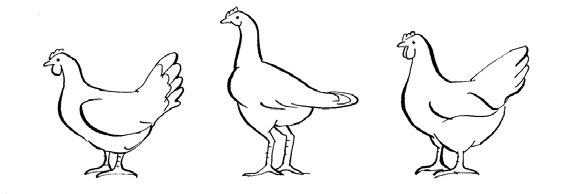

প্রজনন
- যদি আপনি একটি সুস্থ পাল এবং উচ্চ উৎপাদনশীলতা নিশ্চিত করতে চান, তাহলে গ্রাম বা বাজারে সুস্থ এবং সুদর্শন মুরগি নির্বাচন করা গুরুত্বপূর্ণ। তাই আপনার জানা উচিত কিভাবে বিভিন্ন বয়স এবং লিঙ্গের বিভিন্ন জাতের গুণমান বিচার করতে হয়, মূলত তাদের চেহারা, কণ্ঠস্বর এবং আচরণের উপর ভিত্তি করে।
- নিম্নলিখিতটিতে, আমরা বিভিন্ন বয়সে একটি শব্দযুক্ত পাখি কীভাবে নির্বাচন করতে হয় তার সহজ নির্দেশিকা উপস্থাপন করব এবং জাত নির্বাচনের ক্ষেত্রে কী বিবেচনা করতে হবে তা উপস্থাপন করব।
মুরগি নির্বাচন
ছানা, পালনকারী, মুরগি এবং মোরগের মধ্যে বিভিন্ন বৈশিষ্ট্য খুঁজে বের করা গুরুত্বপূর্ণ। দিনের শুরুতে আপনার নতুন পাখি নির্বাচন করুন বা কিনুন, কারণ জল, খাবার এবং বিশ্রামের অভাবের চাপ বেশিরভাগ পাখিকে বেশ অসুস্থ এবং তন্দ্রাচ্ছন্ন দেখাবে।
একটি সুস্থ, সদ্য ডিম ফোটানো ছানার নিম্নলিখিত বৈশিষ্ট্যগুলি থাকা উচিত
- সু-বিকশিত শরীরের দৈর্ঘ্য এবং গভীরতা
- চকচকে, শুষ্ক, ঘন এবং রঙিন পালক
- নরম পেট
- পরিষ্কার, শুকনো নাভি
- পুরু শ্যাঙ্ক, ফাঁকা এবং সোজা পায়ের আঙ্গুল সহ
- বড় পরিষ্কার চোখ।
- প্রাণবন্ত আচরণ
একজন সুস্থ ও ভালো চাষীর নিম্নলিখিত বৈশিষ্ট্য থাকা উচিত
- সুস্থ এবং প্রাণবন্ত দেখাতে হবে
- পালক উজ্জ্বল এবং স্বাভাবিক (জাতের উপর নির্ভর করতে পারে)
- বয়সের জন্য বড় আকার
- চোখ পরিষ্কার এবং চকচকে
- পরিষ্কার এবং শুকনো ঠোঁট এবং নাকের ছিদ্র
- ভেন্টের চারপাশের পালক পরিষ্কার করুন
- সোজা পা এবং পায়ের আঙ্গুল
একটি সুস্থ ও ভালো ডিমের স্তরের নিম্নলিখিত বৈশিষ্ট্য থাকা উচিত: * সুস্থ ও প্রাণবন্ত দেখাতে হবে * প্রজাতির জন্য পালক স্বাভাবিক * লাল চিরুনি (ছাগলছানা অবস্থায় বেশি রঙিন) * চোখ পরিষ্কার এবং চকচকে * পরিষ্কার এবং শুকনো ঠোঁট এবং নাকের ছিদ্র * খোলা অংশের চারপাশে পরিষ্কার পালক * সোজা পা এবং পায়ের আঙ্গুল, আঁশযুক্ত পায়ের কোনও চিহ্ন ছাড়াই * ছাগলছানা অবস্থায় পা কম রঙিন * স্তনের হাড় খুব ধারালো হওয়া উচিত নয় * একটি বড় প্রশস্ত নীচে 
ছোট পালে, মুরগিগুলি শুয়ে আছে কিনা তা পরীক্ষা করা তুলনামূলকভাবে সহজ (চিত্র 38)। আপনার হাত দিয়ে পরীক্ষা করুন। মুরগি যখন শুয়ে থাকে তখন পিউবিক হাড়ের (উপরের) মধ্যে দূরত্ব দুটি আঙুলের সমান হবে। যখন মুরগি বাইরে শুয়ে থাকে তখন পিউবিক হাড়ের মধ্যে কেবল একটি আঙুল যেতে পারে। একটি সুস্থ এবং ভালো মোরগের নিম্নলিখিত বৈশিষ্ট্য থাকা উচিত।
- সতর্ক এবং প্রতিরক্ষামূলক প্রকৃতি
- জাতের জন্য চকচকে এবং স্বাভাবিক পালক স্থানীয় মুরগির বিভিন্ন বয়সে প্রদত্ত এবং খাওয়া খাবারের পরিমাণ
- পরিষ্কার এবং উজ্জ্বল চোখ
- পরিষ্কার এবং শুকনো ঠোঁট এবং নাকের ছিদ্র
- ভেন্টের চারপাশের পালক পরিষ্কার করুন
- সোজা পা এবং পায়ের আঙ্গুল, যেখানে আঁশযুক্ত পায়ের কোনও চিহ্ন নেই
- মুরগির তুলনায় বড় আকারের
ডিম উৎপাদন, বৃদ্ধি (মাংস উৎপাদন) এবং বাচ্চা প্রসবের আচরণের মতো বৈশিষ্ট্য অনুসারে পাখি নির্বাচন করার জন্য প্রতিটি পাখির বৃদ্ধি এবং উৎপাদনশীলতার রেকর্ড রাখা সুবিধাজনক হতে পারে। রেকর্ড রাখার মাধ্যমে আপনি ছানাদের রক্ষা করার জন্য সেরা স্তর বা সেরা মা নির্বাচন করতে পারেন। রেকর্ড রাখার উদাহরণের জন্য অধ্যায় ৮ দেখুন।
জাত নির্বাচন
- উন্নত ব্যবস্থাপনা, বাসস্থান, খাদ্য, মুরগির সুরক্ষা ইত্যাদির মাধ্যমে যখন আপনি আপনার স্থানীয় মুক্ত-পরিসরের হাঁস-মুরগির উৎপাদনশীলতা এবং বেঁচে থাকার উন্নতি করতে সফল হন, তখন আপনি আরও উন্নত জাত প্রবর্তনের মাধ্যমে উৎপাদনশীলতা আরও বাড়াতে চাইতে পারেন।
- একটি জাত হল এমন একটি মুরগির দল যাদের দেহের গঠন এবং পালকের আকৃতি আলাদা। এই অনন্য বৈশিষ্ট্যগুলি এক প্রজন্ম থেকে অন্য প্রজন্মে উত্তরাধিকারসূত্রে প্রাপ্ত হয়। এছাড়াও চিরুনি, কানের লতির রঙ এবং শ্যাঙ্কের রঙ এবং দৈর্ঘ্যের মতো বৈশিষ্ট্যগুলি সাধারণত জাত অনুসারে নির্ধারিত হয়। প্রতিটি জাতের ক্ষেত্রে, পালকের রঙ দ্বারা সাধারণত বিভিন্ন জাত নির্ধারণ করা যেতে পারে। সুতরাং, একটি সাদা এবং একটি কালো মুরগি একই জাতের বিভিন্ন জাত হতে পারে।
- চিত্র ৪০-এ গ্রীষ্মমন্ডলীয় অঞ্চলে সাধারণত পাওয়া যায় এমন তিনটি ভিন্ন প্রজাতি দেখানো হয়েছে, যথা, ফ্রিজল্ড ফেদার, নেকেড-নেক এবং ডোয়ার্ফ। নেকেড-নেক জিন প্রায় প্রতিটি গ্রামে পাওয়া যায় এবং তাপের চাপ এড়াতে এটি একটি প্রাকৃতিক অভিযোজন বলে মনে করা হয়। ফ্রিজল্ড পালক প্রথম নজরে খারাপ দেখাতে পারে, তবে বেশিরভাগ গ্রাম-ভিত্তিক সিস্টেমে এটিও সাধারণ। বামন মুরগির আদর্শ রঙ এবং পালক থাকে, তবে বেশিরভাগ ক্ষেত্রেই ছোট শ্যাঙ্কের কারণে হাঁস-মুরগির জন্য স্বাভাবিক আকারের ২/৩ অংশ থাকে।

- শিল্পায়িত পদ্ধতিতে মুরগি সাধারণত দুটি স্বতন্ত্র উদ্দেশ্যে পালন করা হয়, তা হল ডিম অথবা মাংস উৎপাদন। ডিম অথবা মাংস উৎপাদনে উচ্চ উৎপাদনশীলতা বিশেষায়িত প্রজনন কর্মসূচির ফলাফল। তথাকথিত দ্বৈত-উদ্দেশ্যমূলক জাতগুলিও প্রজনন কর্মসূচির ফলাফল, এবং ঐতিহ্যবাহী পাখির তুলনায় বেশি ডিম এবং বেশি মাংস উৎপাদন করতে পারে।
ডিম উৎপাদন, মাংস উৎপাদন অথবা উভয় ক্ষেত্রে (দ্বৈত উদ্দেশ্য) বিশেষজ্ঞ পাখির বৈশিষ্ট্য চিত্র ৪১-এ দেখানো হয়েছে। ডিম পাড়ার মুরগি "নৌকাকৃতির" হয়, যাদের পিঠ লম্বা সোজা এবং নীচের অংশ বড়। মাংস উৎপাদনকারী (ব্রয়লার) লম্বা পাওয়ালা, আরও সোজা অবস্থানে থাকে এবং ডানা শরীরের উপর উঁচু অবস্থানে থাকে। দ্বৈত-উদ্দেশ্য জাতগুলি স্তর এবং ব্রয়লারের মধ্যে একটি রূপ। স্থানীয় জাতগুলি প্রায়শই দ্বৈত-উদ্দেশ্য জাত আকার ধারণ করে, যদিও শরীরের আকার এবং আকারে অনেক কম ভারী।  ডিম উৎপাদনকারী সাধারণ জাতগুলি (বামে), মাংস (মাঝখানে) এবং উভয় (ডানে)
আপনার মনে থাকা ধরণের উৎপাদনের জন্য উপযুক্ত এবং যে পরিবেশে তাদের রাখা হচ্ছে, যেমন মুক্ত পরিসর বা বন্দীদশা, সেই পরিবেশের জন্য উপযুক্ত, এমন পাখি নির্বাচন করা গুরুত্বপূর্ণ।
- বাণিজ্যিক খাত অত্যন্ত বিশেষায়িত হাইব্রিড (বিভিন্ন প্রজাতির ক্রস) তৈরি করেছে যার মধ্যে স্তরগুলি প্রতি বছর 300টি ডিম উৎপাদন করতে পারে এবং ব্রয়লার 6 সপ্তাহে 2 কেজি পর্যন্ত পৌঁছাতে পারে। এই উচ্চ উৎপাদন অর্জনের জন্য, হাইব্রিড জাতগুলির ব্যবস্থাপনা, খাওয়ানো এবং রোগ ব্যবস্থাপনার জন্য খুব নির্দিষ্ট প্রয়োজনীয়তা রয়েছে এবং উৎপাদন খরচ বেশি। তাই এগুলি সাধারণত ফ্রি-রেঞ্জ এবং উন্নত ফ্রি-রেঞ্জ সিস্টেমে উপযুক্ত নয়।
- উগান্ডায় পালন করা সমস্ত মুরগির মধ্যে ৮০% এরও বেশি দেশীয় মুরগি। বাণিজ্যিক স্তর এবং ব্রয়লারের মতো, আমাদের স্থানীয় মুরগির জাতগুলি সুনির্দিষ্টভাবে সংজ্ঞায়িত করা হয়নি। এই কারণে, এই জাতটি লুগবারা, আলুর, ইটেসো, আচোলি বা এমনকি নির্দিষ্ট কিছু জিনগত বৈশিষ্ট্যের জন্য বলা কঠিন। অতএব, আসুন আমরা আমাদের সমস্ত স্থানীয় মুরগিকে একই জাতের বিবেচনা করি কারণ কোনও নির্দিষ্ট বৈশিষ্ট্য যেমন অভিন্ন পালকের রঙ, চিরুনির ধরণ, শ্যাঙ্ক বৈশিষ্ট্য - তাদের সনাক্ত করে না।
- পূর্বে উল্লিখিত স্থানীয় মুরগি, মৌলিক পালন পদ্ধতির উন্নতি ছাড়াই, ভালো বাজার মূল্য থাকা সত্ত্বেও কম উৎপাদনশীল জাত থেকে যায়। ভালো জাত নির্বাচন করে এবং ক্রসব্রিডিং-এর মাধ্যমে তাদের জাত উন্নত করা - প্রোগ্রামযুক্ত হ্যাচিংয়ের পাশাপাশি বাজারের চাহিদা মেটাতে আমাদের স্টককে সহজেই বৃদ্ধি করতে সাহায্য করবে।
- উগান্ডায়, জাতীয় পশু প্রজনন কেন্দ্র সম্প্রতি কুরোইলার জাতের মুরগি চালু করেছে, যা একটি ভারতীয় আদিবাসী দ্বৈত-উদ্দেশ্য মুরগি। কুরোইলারগুলি ভারী এবং দ্রুত বর্ধনশীল মুরগি, যাদের ব্রুডি আচরণ নেই। তারা আমাদের স্থানীয় মুরগির মতো মুক্ত পরিবেশে বেঁচে থাকতে পারে। তাই, আমাদের দেশীয় মুরগির সাথে ক্রসব্রিডিংয়ের জন্য এগুলি ব্যবহার করা যেতে পারে। সৌভাগ্যবশত, সমগ্র পশ্চিম নীল অঞ্চল এবং উত্তরের কিছু অংশে তাদের অনেকগুলি চালু করা হয়েছে।
ক্রস-ব্রিডিং
- ক্রস-ব্রিডিং হলো দুটি ভিন্ন প্রজাতির মিলন, যাতে কৃষকের পছন্দের ডিম বা মাংস উৎপাদনকারী সন্তান জন্ম দেয়। ক্রস-ব্রিডিং বৃদ্ধি এবং উৎপাদন উন্নত করে। উদাহরণস্বরূপ, কুরয়েলার এবং স্থানীয় পাখির মিলনের ফলে এমন সন্তান জন্মায় যারা দ্রুত বৃদ্ধি পায় এবং বেশি ডিম পাড়ে। কিন্তু বংশধররা প্রায়শই ডিম ফোটানোর অভ্যাস হারিয়ে ফেলে। উপরন্তু, বংশধররা প্রায়শই পিতামাতা কুয়েলারের তুলনায় স্থানীয় রোগের প্রতি বেশি প্রতিরোধী হয়।
- স্থানীয় মুরগির উৎপাদন বৃদ্ধির জন্য, অন্যান্য জাতের মুরগির সাথে ক্রসব্রিডিং অনুশীলন করা যেতে পারে। তবে, একজন পশুচিকিৎসকের সাথে পরামর্শ করা গুরুত্বপূর্ণ, যিনি ডিম উৎপাদন, বৃদ্ধি বা উভয় বৃদ্ধির জন্য উপযুক্ত এবং উপলব্ধ জাতগুলি সুপারিশ করতে পারেন। এটিও জেনে রাখা গুরুত্বপূর্ণ যে বংশধররা তাদের পিতামাতার কাছ থেকে বিভিন্ন গুণাবলী অর্জন করবে যা খাঁটি জাতের।
- এটাও জোর দিয়ে বলা গুরুত্বপূর্ণ যে, যদি গ্রাম পর্যায়ে একটি ক্রস-ব্রিড চালু করা হয়, তাহলে ব্যবস্থাপনা, খাদ্য এবং স্বাস্থ্য সুরক্ষা পরিকল্পনা উন্নত করা অত্যন্ত গুরুত্বপূর্ণ।